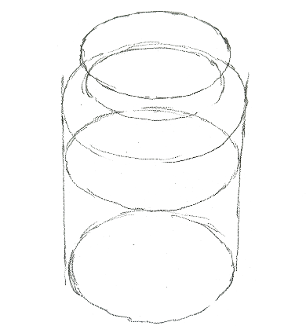
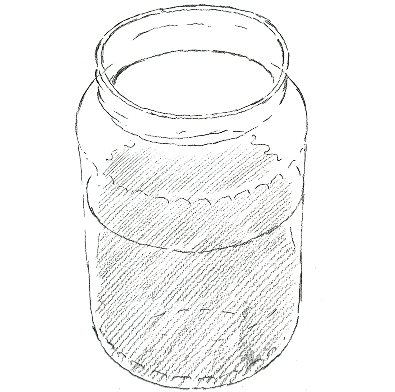
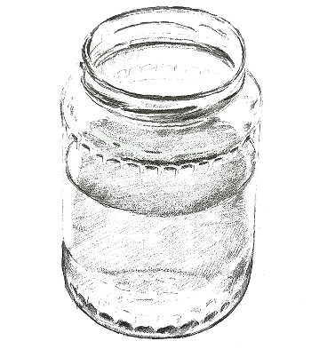
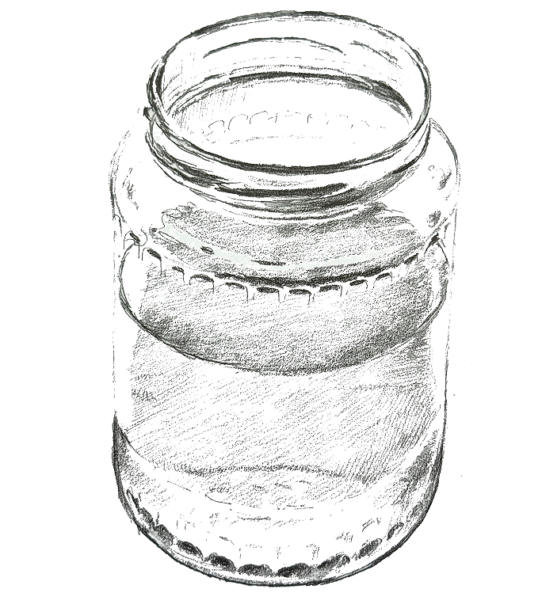

(01)
Начните с овалов – обозначьте верхний край кувшина и уровень воды

Начните с овалов – обозначьте верхний край кувшина и уровень воды

Затените ту часть рисунка, которая обозначает воду – это будет самый темный участок, так как кувшин прозрачный

Обозначьте все тени, обратите внимание на разницу оттенка на поверхности воды и в ее толще. Добавьте темных штрихов на горлышке и сделайте видимыми маленькие узоры по периметру.

